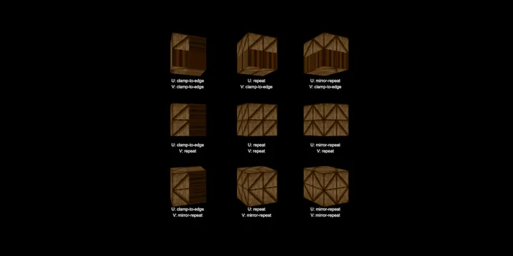

3D Material & Texture Texture & Sampler
Sampler AddressMode - RedGPU WebGPU Example
An example showing combinations of AddressMode options for a texture sampler.
텍스처 샘플러의 AddressMode 옵션 조합을 보여주는 예제입니다.

3D Material & Texture Texture & Sampler
An example showing combinations of AddressMode options for a texture sampler.
텍스처 샘플러의 AddressMode 옵션 조합을 보여주는 예제입니다.
